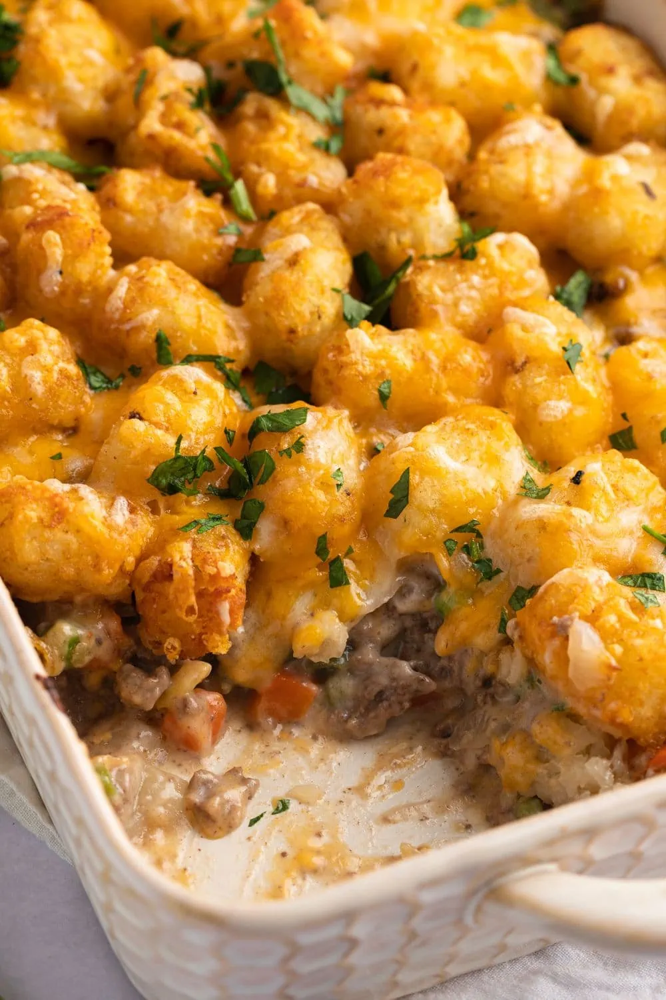

Tater Tot Casserole

Taters 'n' Layers
Tater tot casserole, also known as cowboy casserole,
has a bed of golden brown tater tots with cheesy and meaty
filling underneath. With its rich and savory flavor, this easy
tater tot casserole is a delicious family dinner even the kids will love.
What's in it?
- 1lb Ground Beef
- 1 Bag frozen tater tots
- 8oz Shredded Cheddar Cheese
- 1 Chopped Onion
- 1 Can Campbells Condensed Cream of Mushroom Soup
- 3tbs Ketchup
- 1tbs Worcestershire Sauce
- Salt, pepper, and a little italian seasoning to taste
Now here's how to get the casserole prepared
- Choose the right dish size. A 12×8-inch dish works perfectly here.
It should be filled ¾ of the way once you are done with all the layers.
- Preheat oven to 425 F.
- In a large skillet, cook the beef and onion over medium-high heat until
the beef is fully browned. Break up the meat as it cooks. Drain off
excess liquid.
- In a large bowl, mix together the beef mixture with Campbell’s Soup,
ketchup, Worcestershire sauce, and 1 cup of shredded cheese. You can
also add veggies in this step if you’re using any.
- Grease a 12×8-inch shallow baking dish with oil. Pour the beef mixture
into the dish, and top with an even layer of tater tots.
- Bake at 425 degrees F for 20 minutes. Top the casserole with shredded
cheese and bake for 5 additional minutes until the cheese is melted.
You’ll know it’s done when the tater tots are golden brown and the
casserole is bubbling.